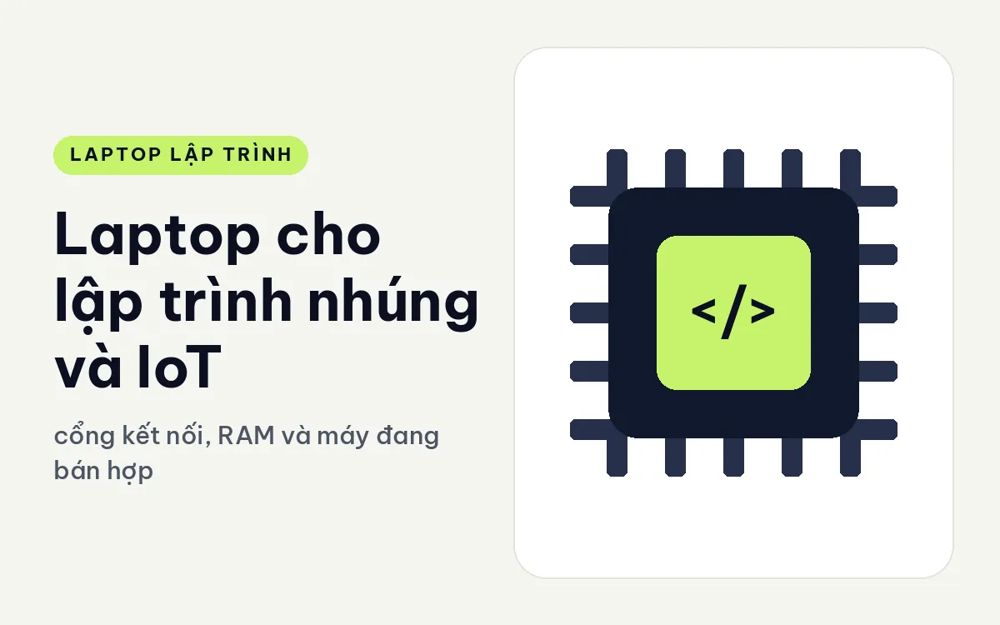
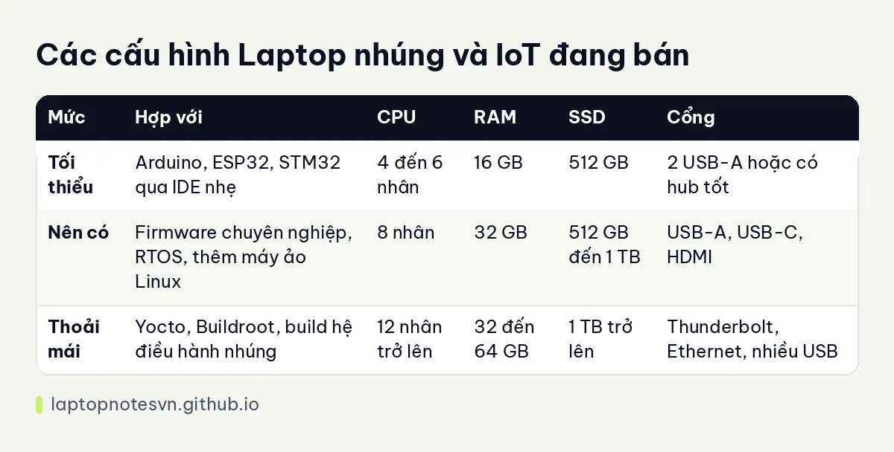

Laptop cho lập trình nhúng và IoT - cổng kết nối, RAM và máy đang bán hợp

Người viết firmware cho vi điều khiển hay làm thiết bị IoT dùng laptop theo cách rất khác dân web. Máy không nặng về đồ họa, nhưng phải cắm được nhiều thứ cùng lúc: mạch nạp, cáp serial, bo phát triển, đôi khi cả máy phân tích logic. Một chiếc máy mỏng đẹp mà chỉ có hai cổng USB-C thường làm bạn khổ vì cứ phải cắm rút dây.
Bài này nói về những thứ người làm nhúng cần để ý khi chọn máy: cổng kết nối, khả năng chạy toolchain và máy ảo, dung lượng ổ, rồi hai máy đang bán hợp với việc này. Mức cấu hình bên dưới là kinh nghiệm tư vấn chung chứ không phải con số cứng.
Thứ người làm nhúng dùng nhiều nhất
Đầu tiên là cổng. Mỗi lần nạp chương trình, bạn thường cắm một mạch nạp, một cáp debug, có khi thêm cáp nguồn cho bo mạch. Máy có vài cổng USB-A ngoài cổng USB-C sẽ đỡ phải mua hub, mà hub rẻ tiền hay chập chờn đúng lúc đang gỡ lỗi, rất khó chịu. Thêm một cổng HDMI để cắm màn hình rời cũng tiện khi bạn vừa nhìn code vừa nhìn dạng sóng.
Thứ hai là khả năng chạy hệ điều hành phụ. Nhiều bộ công cụ nhúng, nhất là bộ build Linux như Yocto, chạy ổn nhất trên Linux. Bạn có thể dùng WSL2 hoặc máy ảo, và khi đó RAM với số nhân CPU trở thành yếu tố chính. Build một ảnh hệ thống đầy đủ ngốn khá nhiều bộ nhớ, nhiều thời gian, và hàng chục GB ổ cứng cho file trung gian.
Thứ ba là phần mềm điều khiển thiết bị. Một số công cụ debug cũ chỉ có driver cho Windows, số khác chạy tốt trên Linux. Có máy sạch, ít phần mềm cài sẵn, sẽ đỡ rắc rối khi cài driver lạ. Nếu bạn muốn dùng Linux làm hệ chính thì máy bán không kèm hệ điều hành cũng là một lợi thế, vì bạn khỏi phải xóa bản Windows có sẵn.
Cuối cùng là bàn phím và màn hình, vì công việc là đọc datasheet, đọc log serial và gõ code nhiều giờ liền. Màn hình tỉ lệ 16:10 cho nhiều dòng hơn mỗi màn, bàn phím có độ nảy tốt giúp mỏi tay chậm hơn.
Bảng cấu hình theo mức
| Mức | Hợp với | CPU | RAM | SSD | Cổng |
|---|---|---|---|---|---|
| Tối thiểu | Arduino, ESP32, STM32 qua IDE nhẹ | 4 đến 6 nhân | 16 GB | 512 GB | 2 USB-A hoặc có hub tốt |
| Nên có | Firmware chuyên nghiệp, RTOS, thêm máy ảo Linux | 8 nhân | 32 GB | 512 GB đến 1 TB | USB-A, USB-C, HDMI |
| Thoải mái | Yocto, Buildroot, build hệ điều hành nhúng | 12 nhân trở lên | 32 đến 64 GB | 1 TB trở lên | Thunderbolt, Ethernet, nhiều USB |
Nếu hay chạy máy ảo song song với IDE, bạn nên đọc bài laptop chạy WSL2 và máy ảo để biết cách chia RAM và nhân cho từng máy ảo.

Gợi ý máy cụ thể cho lập trình nhúng và IoT
Về mặt cổng, Lenovo IdeaPad Slim 3 14 inch (2026) là máy dễ dùng nhất cho việc này. Máy có hai cổng USB-A, một cổng USB-C hỗ trợ sạc và xuất hình, thêm HDMI và khe thẻ SD. Cấu hình Core 5 320, RAM DDR5 16GB, SSD 512GB, nặng khoảng 1,43 kg. Hai khe M.2 giúp bạn gắn thêm ổ để chứa dự án build lớn.
Bạn sẽ thấy 16GB RAM vừa đủ cho IDE kèm một máy ảo nhẹ, nhưng build ảnh Linux đầy đủ thì sẽ chật. Lúc đó chỉ nên chạy build qua đêm hoặc chuyển sang máy có RAM lớn hơn.
Nếu bạn cần máy có đường mạng có dây để kéo gói, nạp qua mạng cho thiết bị IoT, hãy xem Lenovo ThinkBook 14 G8 IRL (2025). Máy dùng Core 5 210H với 8 nhân 12 luồng, RAM DDR5 16GB, SSD 512GB, nặng khoảng 1,36 kg, dày 17,5 mm. Máy có cổng Thunderbolt 4, cổng Ethernet và khe thẻ SD, và bản bán là No OS nên bạn tự cài Linux hoặc Windows theo ý mình. Pin 45Wh khá khiêm tốn, nên đi lab cả ngày nhớ mang sạc.
Chọn máy theo hướng công việc
Người làm vi điều khiển nhỏ như Arduino, ESP32 hay STM32 thường chỉ cần IDE nhẹ, nên máy 16GB thoải mái. Điều đáng tiền hơn là cổng và độ ổn định của USB. Người làm Linux nhúng, chạy Yocto hoặc Buildroot, lại cần RAM và nhiều nhân hơn hẳn, vì mỗi lần build kéo dài hàng giờ.
Nếu bạn làm cả phần mềm trên máy chủ cho thiết bị, ví dụ dịch vụ nhận dữ liệu cảm biến, hãy tính thêm Docker và cơ sở dữ liệu. Khi đó cấu hình nên nhích lên 32GB. Còn nếu bạn hay đi hiện trường để nạp và gỡ lỗi thiết bị, trọng lượng máy và dung lượng pin trở thành tiêu chí đáng cân nhắc hơn cả số nhân.
Một mẹo nhỏ: luôn thử thiết bị thật của mình với máy trước khi mua, nếu có thể. Một số mạch nạp đời cũ kén cổng USB, và bạn không muốn phát hiện điều đó sau khi đã trả tiền.
Cài đặt và dùng sao cho bền
- Gắn cổng USB cố định cho từng thiết bị. Đổi cổng đôi khi làm hệ điều hành gán lại tên cổng COM, khiến IDE không tìm thấy bo mạch.
- Dùng cáp dữ liệu chất lượng tốt. Cáp chỉ sạc, hoặc cáp quá dài, là thủ phạm quen thuộc khi mạch nạp không nhận.
- Nếu dùng WSL2 để build, để mã nguồn nằm trong hệ file của Linux chứ không phải ổ Windows, tốc độ build khác biệt rất rõ.
- Giữ ít nhất 100 GB trống nếu có ý định build Yocto, vì file trung gian phình ra nhanh.
- Tắt chế độ tiết kiệm nguồn cho cổng USB trong cài đặt Windows để thiết bị debug không tự ngắt giữa chừng.
Về lâu dài, khi bạn làm nhiều dự án có phần cứng khác nhau, một bộ hub có nguồn riêng và vài cáp dự phòng quan trọng không kém cấu hình máy. Cũng nên có sẵn một ổ SSD ngoài để lưu ảnh hệ thống và bản sao lưu dự án.
Bạn học xong phần cổng rồi, muốn biết thêm máy hỗ trợ Thunderbolt hay USB4 thì dùng được những gì thêm, thì bài cổng Thunderbolt và USB4 cho dev có phần riêng về chuyện này.
Về bàn phím và độ bền, bài ThinkPad T14 Gen 7 cho lập trình là điểm tham chiếu tốt cho người hay mang máy ra lab.
Đăng ngày 09/11/2026